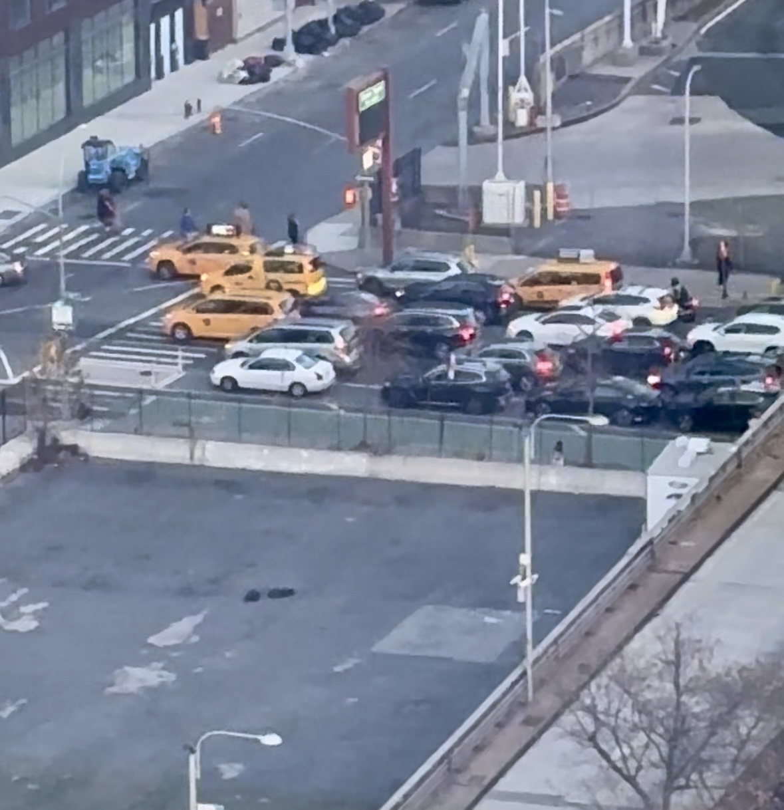

Bicycle
Bicycles first became popular in New York City
Bicycle
Bicycles first became popular in New York Cityin the late 19th century, with a cycling craze in
the 1890s that led to the creation of bike lanes.
However, the rise of automobiles in the 20th century
led to a decline in cycling. In the late 20th and early
21st centuries, bicycles made a strong comeback, driven
by a focus on sustainability and fitness. The launch of
the Citi Bike program in 2009 marked a significant moment
in this resurgence. Today, bikes are an integral part of
NYC’s transportation system, supported by an expanding network
of bike lanes and rental programs.
 Crosswalk Button
The crosswalk button in New York City was introduced in
Crosswalk Button
The crosswalk button in New York City was introduced inthe mid-20th century, allowing pedestrians to control when
to cross the street by activating traffic signals. While
initially a key safety feature, many buttons became redundant
with the development of automated traffic systems. Despite this,
they remain common in the city, though modern updates are
gradually replacing some of the older systems with automated
solutions. The button symbolizes New York's effort to manage
pedestrian and traffic flow in a busy urban environment.

Car
An interesting story in New York City's car history is the
Great Depression Traffic Jam of 1930. A routine breakdown
led to a massive traffic gridlock that spilled onto the Brooklyn Bridge,
causing hours of chaos. This incident highlighted the city's struggle
to accommodate the growing number of cars and underscored the need
for better infrastructure. It marked the beginning of efforts to
expand roadways and improve traffic management in the face of
New York's automobile boom.
Great Depression Traffic Jam of 1930. A routine breakdown
led to a massive traffic gridlock that spilled onto the Brooklyn Bridge,
causing hours of chaos. This incident highlighted the city's struggle
to accommodate the growing number of cars and underscored the need
for better infrastructure. It marked the beginning of efforts to
expand roadways and improve traffic management in the face of
New York's automobile boom.
 Crowd Noise
As of 2023, New York City's population is approximately 8.26 million people,
Crowd Noise
As of 2023, New York City's population is approximately 8.26 million people,making it the most populous city in the United States. While the city has
seen a slight decline in population in recent years due to factors like high
living costs and the rise of remote work, it continues to be a global hub of
culture, finance, and diversity. With its dynamic neighborhoods and
ever-evolving landscape, NYC remains a vital center for commerce, innovation,
and international influence.
 NYPD
The New York Police Department (NYPD) is the largest municipal police
NYPD
The New York Police Department (NYPD) is the largest municipal policeforce in the United States, responsible for maintaining law and order
across New York City. Established in 1845, the NYPD has a rich history
of policing one of the world’s most diverse and populous cities.
It plays a crucial role in crime prevention, investigation, and
community safety, with a wide range of specialized units, including
counterterrorism and traffic enforcement. Known for its iconic uniform
and significant presence in the city, the NYPD is an integral part of
New York’s identity and daily life.